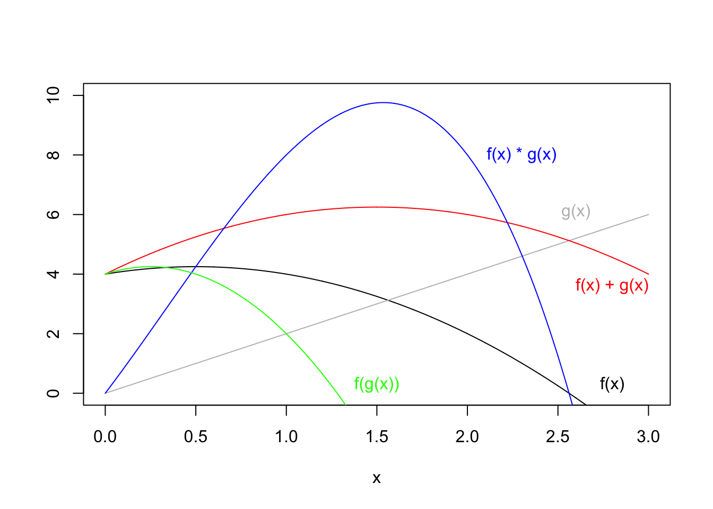

Chapter 2 Functions
Two functions, \(f(x)\) and \(g(x)\) are below:
\[ f(x) = 4 + x - x^2 \tag{2.1} \]
\[ g(x) = 2x \tag{2.2} \]
f <- function(x) 4 + x - x^2
g <- function(x) 2*x2.0.1 Composition of Functions
\[ (f \circ g)(x) = f(g(x)) \tag{2.3} \]
x <- seq(0, 3, .5)
fx <- f(x)
gx <- g(x)
f_gx <- f(x) + g(x) # (f + g)(x) adding functions
f.gx <- f(x) * g(x) # (f * g)(x) multiplying functions
fgx <- f(g(x)) # (f o g)(x) composition of functions
modelsummary::datasummary_df(data.frame(x, fx, gx, f_gx, f.gx, fgx), title = "Combining Functions")| x | fx | gx | f_gx | f.gx | fgx |
|---|---|---|---|---|---|
| 0.00 | 4.00 | 0.00 | 4.00 | 0.00 | 4.00 |
| 0.50 | 4.25 | 1.00 | 5.25 | 4.25 | 4.00 |
| 1.00 | 4.00 | 2.00 | 6.00 | 8.00 | 2.00 |
| 1.50 | 3.25 | 3.00 | 6.25 | 9.75 | -2.00 |
| 2.00 | 2.00 | 4.00 | 6.00 | 8.00 | -8.00 |
| 2.50 | 0.25 | 5.00 | 5.25 | 1.25 | -16.00 |
| 3.00 | -2.00 | 6.00 | 4.00 | -12.00 | -26.00 |
x <- seq(0, 3, .001)
plot(f(x) ~ x, type = "l", ylim = c(0, 10), ylab = "")
text(2.8, .3, labels = "f(x)")
lines(g(x) ~ x, col = "grey")
text(2.6, 6.1, "g(x)", col = "grey")
lines(f(x) + g(x) ~ x, col = "red")
text(2.8, 3.6, "f(x) + g(x)", col = "red")
lines(f(x) * g(x) ~ x, col = "blue")
text(2.3, 8, "f(x) * g(x)", col = "blue")
lines(f(g(x)) ~ x, col = "green")
text(1.5, .3, "f(g(x))", col = "green")
Note that when \(x\) is zero, \(f(x)\) is 4, and \(g(x)\) is zero. So it makes sense that \(g(x)\) starts at 0 on the y-axis. It also make sense that \((f * g)\) starts at zero on the y-axis, because any value of \(f(x)\) will be multiplied by zero, which will result in zero. It is also intuitive that both \(f(x)\) and \(f(x) + g(x)\) start at 4 on the y axis, because \(f(x)\) is 4 when \(x\) is zero (\(f(x) = 0\)), and adding zero to this does not change this value (\(f(x) + g(x) = (4 + 0) = 4\), when \(x=0\)).